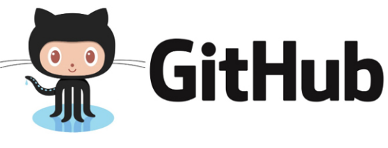
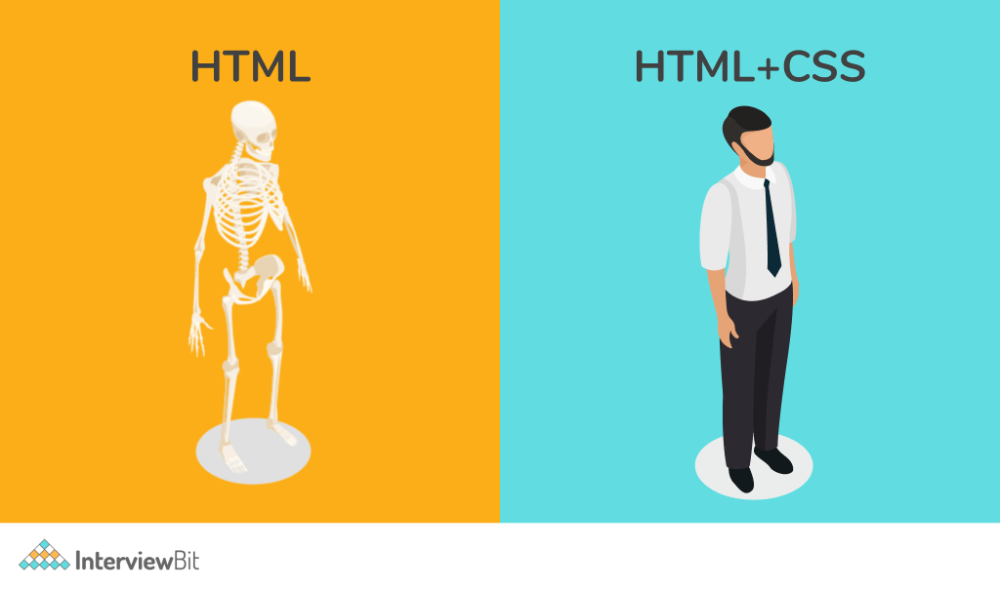
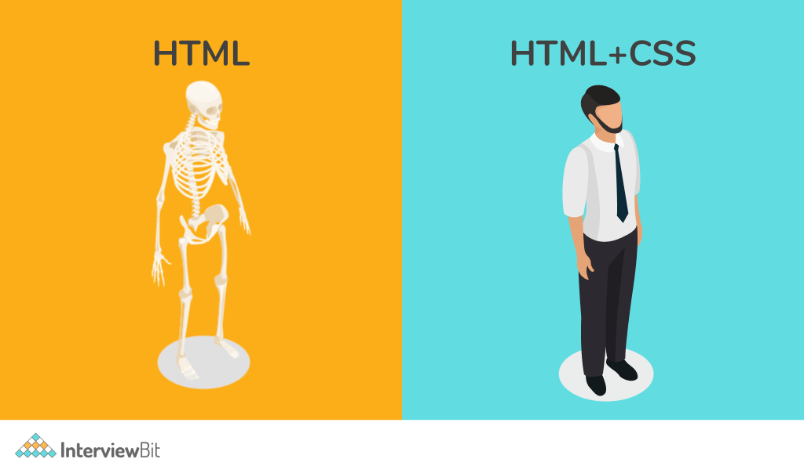

Habilidades del Frontend con HTML Y CSS.
Las habilidades del Frontend con HTML y CSS son esenciales para cualquier desarrollador web. Un desarrollador frontend debe ser capaz de crear y editar documentos HTML para estructurar el contenido de un sitio web, y utilizar CSS para dar estilo a los elementos HTML. Además, debe ser capaz de crear diseños responsive que se adaptan a diferentes tamaños de pantalla, y utilizar el control de versiones y Git para organizar proyectos. Finalmente, además de las habilidades técnicas, un desarrollador frontend también necesita habilidades blandas, como la capacidad de trabajar en equipo y la capacidad de resolver problemas de manera efectiva.
TERMINAL DE COMANDOS.
¿Qué es la terminal de comandos?
La terminal de comandos de Linux es una interfaz que permite a los usuarios interactuar con el sistema operativo a través de texto. Esta interfaz es muy útil para realizar tareas de administración del sistema, como instalar software, administrar archivos y servicios, y monitorear el rendimiento del sistema. Los comandos en la terminal de Linux son instrucciones que el usuario puede ingresar para realizar una acción específica. Por ejemplo, el comando ls se utiliza para listar los archivos y directorios en el directorio actual, y el comando cd se utiliza para cambiar el directorio actual.
GIT Y GITHUB.
¿Qué es GIT?
Git es un sistema de control de versiones que permite a los desarrolladores rastrear y gestionar las diferentes versiones de un proyecto. Cada vez que se guarda el trabajo en Git, se crea una confirmación, que es una instantánea de todos los archivos en un momento dado. Git también permite revertir el código a una confirmación anterior, inspeccionar cómo cambian los archivos de una confirmación a la siguiente y revisar información como dónde y cuándo se realizaron los cambios. Además, Git permite un desarrollo flexible y simultáneo a través de ramas, lo que facilita la administración del código estable y la entrega de actualizaciones más rápidamente.
¿Qué es GITHUB?
GitHub es una plataforma en línea que permite a los desarrolladores alojar y compartir proyectos de software. Esta plataforma utiliza el sistema de control de versiones Git, lo que facilita la colaboración en proyectos y el seguimiento de cambios en el código. GitHub permite a los usuarios crear repositorios para sus proyectos, donde pueden almacenar y gestionar versiones de sus archivos de código. Además, GitHub ofrece herramientas para la colaboración, como la capacidad de crear y revisar solicitudes de extracción, y la capacidad de discutir y rastrear problemas en el código. También permite a los usuarios seguir a otros desarrolladores y proyectos.

Crea una cuenta en GITHUB y vinculalo con tu repositorio de GIT.
Ve al sitio web de GitHub y llena el formulario de registro con tus datos personales y una dirección de correo electrónico,
instala Git en tu computadora, configura Git con tu información, crea un repositorio en GitHub, vincula tu repositorio local de Git con el repositorio de GitHub y sube tus cambios a GitHub.
Sube tus proyecto a GITHUB.
Subes tus cambios a GitHub con el comando git push origin master o main, que sube tus cambios al repositorio remoto en GitHub.
HTML - Lenguaje de Marcas de Hipertexto.
¿Qué es HTML?
HTML, que significa HyperText Markup Language, es el lenguaje de marcado estándar para documentos diseñados para ser mostrados en un navegador web. HTML utiliza etiquetas o marcas para definir elementos en un documento, como encabezados, párrafos, listas, enlaces, imágenes, etc. Cada etiqueta se identifica porque está encerrada entre los signos menor que y mayor que (<>), y algunas tienen atributos que pueden tomar algún valor. HTML permite a los desarrolladores estructurar el contenido de una página web y darle estilo con CSS.

CSS - HOJA DE ESTILOS EN CASCADA.
¿Qué es CSS?
CSS, que significa Cascading Style Sheets, es un lenguaje de hojas de estilo utilizado para describir la apariencia de un documento escrito en HTML. Con CSS, puedes definir el diseño, el color, la tipografía y otros estilos visuales de un sitio web. CSS permite a los desarrolladores personalizar completamente la apariencia de las páginas web, sin afectar la estructura semántica y el contenido del documento.

¡Espero te vuelvas un gran Frontend Developer!
 

Si tienes alguna pregunta escríbeme a
diegojvieirat@gmail.com